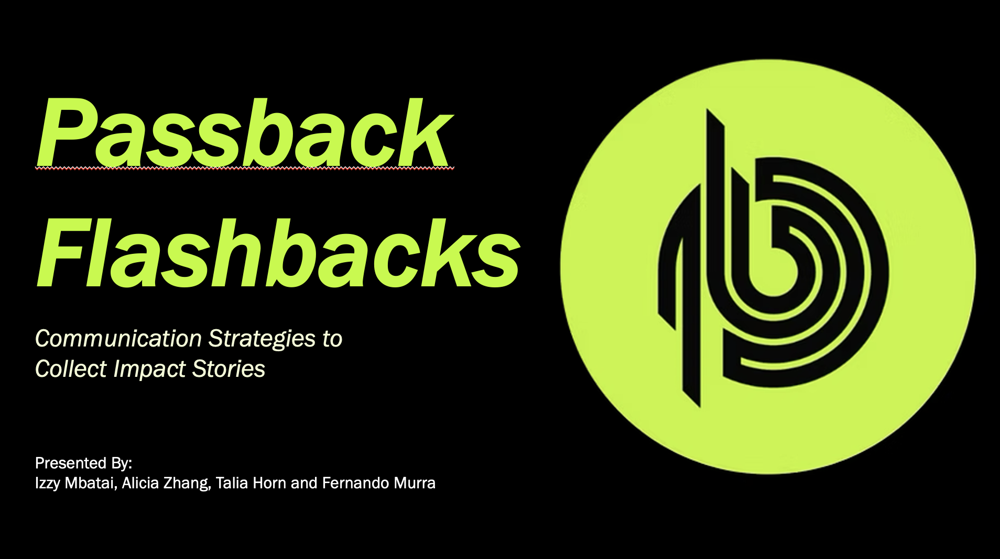
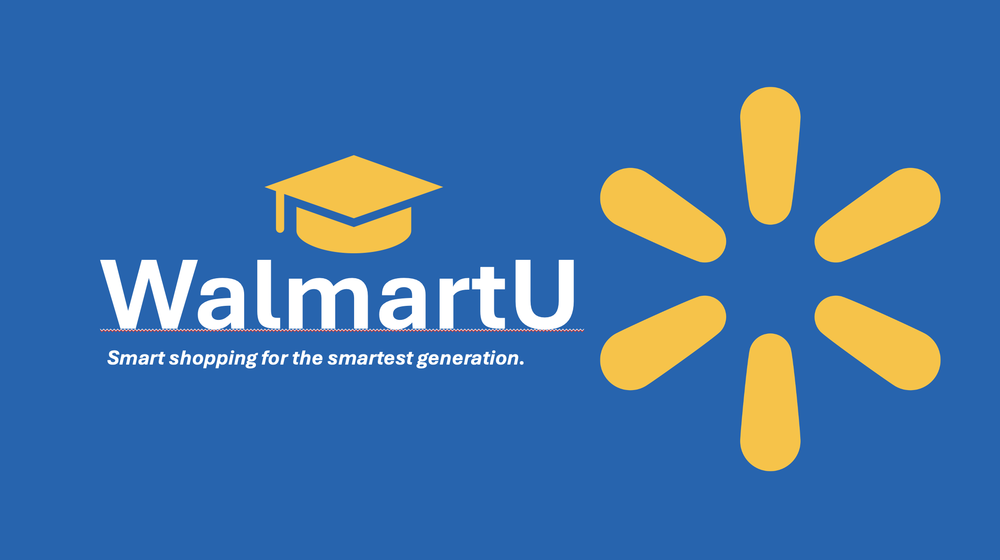
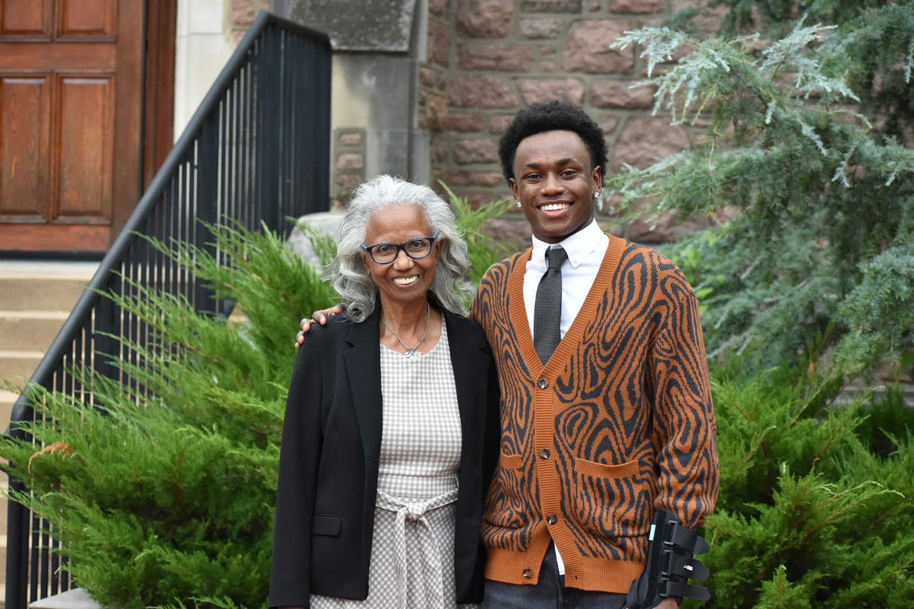

Technical Projects
Object-Oriented File System & Command Interpreter | C++
Using the C++ skills I developed throughout that fall, I engineered an extensive file system that featured a command interface using polymorphism and dynamic commands. I created a system that supported file creation and interaction while fortifying the system against input errors and memory leaks.
Scavenger | SwiftUI, Firebase
I, alongside a small group of my friends, spent a semester architecting Scavenger, a SwiftUI-based social media application that hosts weekly scavenger hunts for friend groups to participate in. We integrated the user authentication, data storage, and real-time updates using Google’s Firebase.
NBA Wordle | Python, MySQL, HTML, CSS, JavaScript, External APIs
In this project, I constructed a full-stack Wordle-style web application generating NBA player puzzles using real-life data. I organized a pipeline to capture and clean data from the NBA API, processing multiple data points for over 450+ players. I implemented the backend using Python and MySQL, and built an interactive frontend using HTML, CSS, and JavaScript.
NBA Guess Who? Game | Java
Using Java, I authored a desktop game for users to identify NBA teams through dynamically generated player clues. I managed full-game state management, input handling, and graphical rendering as well as developing a data management system to encapsulate and store team and player logic.
Case Competitions & Client Projects

Passback Flashbacks
My team and I worked on creating a multi-layed communication strategy for Passback, a local St. Louis company headlining the sports circular economy. Over many weeks of talking with our client, brainstorming and creating ideas, we presented the Executive Director with a strong solution that we believe can help spread the impact that Passback has on our local community. In addition to the brainstorming process, I was tasked to lead the design aspect of our project – check out our presentation here.
View Presentation Here
WalmartU
My team and I worked on a semester-long business analysis of Walmart to locate pain points and present a creative solution for a group of judges. The case competition consisted of a rigorous brainstorming process amongst teammates, TAs, and our professor, Dr. Oren Reshef. At the end of the process, my group proposed a creative solution – “WalmartU: Smart Shopping for the Smartest Generation”. In addition to being a large part of building a solution, I spearheaded the design process of our presentation—which you can view here.
View Presentation HerePublications

"They Not Like Us" - Who Actually Won the Drake vs. Kendrick Beef?
Over the last few months of my first year of college, I wrote my first published paper: “‘They Not Like Us’ - Who Actually Won the Drake vs. Kendrick Beef?”. In this essay, I explored how the Drake vs. Kendrick Lamar rap beef exposed the ways Black culture and identity are packaged in ways to be commodified in mainstream culture. I argued that the real loss of this rap beef lies in how our culture turns Black creativity, conflict, and authenticity into entertainment for clicks and streams. As a result of my efforts, I was selected as the winner of the Dean James E. McLeod First-Year Writing Prize – the best original research paper written by a first-year student at WashU. Check it out here.
Read Paper Here